Histoire et éducation à la citoyenneté
02 / 12 réalité sociales
L'émergence d'une civilisation
Vers -3500 à -500 · Le rôle de l'écriture
- civilisation
- communication
- échange
- justice
- pouvoir
- religion

Mise en contexte
Une civilisation est un ensemble de sociétés qui partagent des éléments communs, tels un territoire, des institutions, une culture, etc. L'invention et la diffusion de l'écriture, vers 3300 ans av. J.-C., sont liées au développement des premières civilisations. L'étude de l'émergence de la civilisation mésopotamienne est l'occasion de lier l'apport de l'écriture à l'organisation d'une société.
L'apparition des premiers grands foyers de civilisation
Grâce à l'archéologie, nous pouvons nous accorder sur l'existence de huit foyers de civilisation s'étant développés indépendamment les uns des autres.
| Foyer | Région actuelle | Apparition |
|---|---|---|
| Sumérienne | Mésopotamie | vers -3500 |
| Égyptienne | Égypte | à peu près en même temps |
| Caral | côte pacifique du Pérou | peut-être dès -3000 |
| Sabéenne | Yémen et Éthiopie | vers -2500 |
| Indus | Pakistan | vers -2300 |
| Chinoise | vallée du Fleuve Jaune | vers -2200 |
| Indienne | plaine du Gange | de -1700 à -500 |
| Olmèque | sud du Mexique | vers -1200 |
Ces huit foyers n'apparaissent pas au même moment et n'ont aucun contact entre eux : la civilisation olmèque naît plus de deux mille ans après la civilisation sumérienne, de l'autre côté de la planète. Pourtant, ils ont tous un point commun frappant. Chacun s'installe près d'un cours d'eau important : le Tigre et l'Euphrate en Mésopotamie, le Nil en Égypte, l'Indus au Pakistan, le Fleuve Jaune en Chine, le Gange en Inde, le Coatzacoalcos au Mexique.
Ce n'est pas un hasard. Le fleuve fournit l'eau nécessaire à l'irrigation des champs, dépose à chaque crue un limon qui enrichit la terre et sert de route pour transporter les marchandises lourdes. Sans cette abondance, aucun surplus alimentaire n'est possible, et sans surplus, aucune ville ne peut nourrir des artisans, des prêtres et des soldats qui ne cultivent pas.
La Mésopotamie et le Croissant fertile
Entre le Tigre et l'Euphrate
La Mésopotamie se situe dans le Croissant fertile, au croisement de trois continents :
- L'Europe
- L'Asie
- L'Afrique
Cette région comporte deux fleuves importants : le Tigre et l'Euphrate. Tout d'abord, la terre qui s'y trouve est très fertile grâce au limon apporté par la crue des deux fleuves. De plus, la proximité des cours d'eau permet la construction de canaux qui serviront à fertiliser les sols et à augmenter la production agricole. Tous ces facteurs contribuent à une production agricole abondante et à une augmentation de la population. Finalement, le Tigre et l'Euphrate peuvent être utilisés afin de se déplacer sur le territoire. La croissance du nombre de personnes a obligé ces derniers à se regrouper en cités-États.
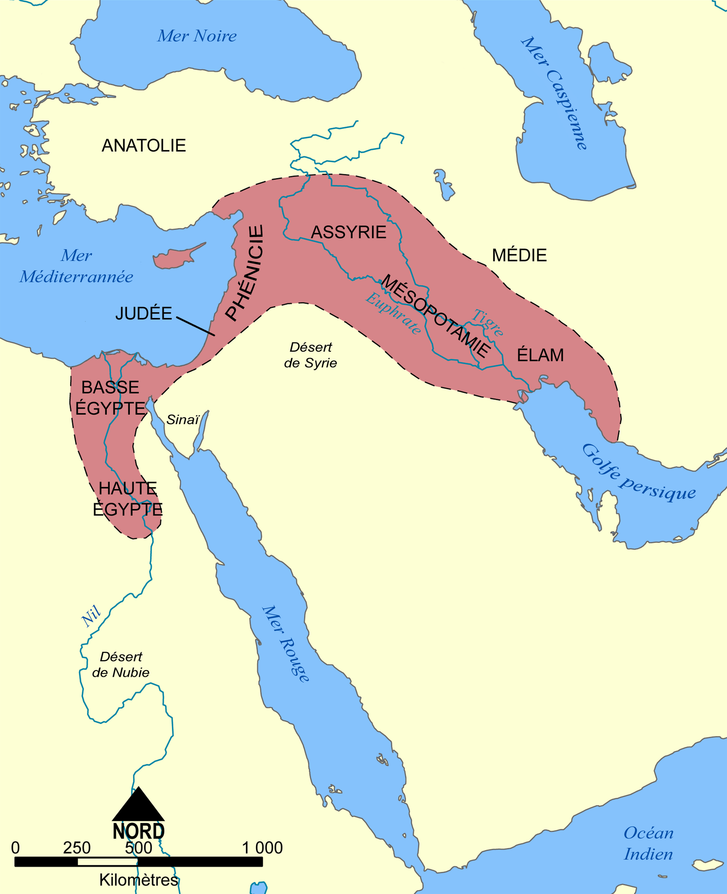
Source
User:NormanEinstein , based on a similar map from the 1994 edition of the Encyclopedia Britannica. Translated by user:Sting, Croissant fertile carte, Wikimedia Commons. Licence : Creative Commons BY-SA 3.0.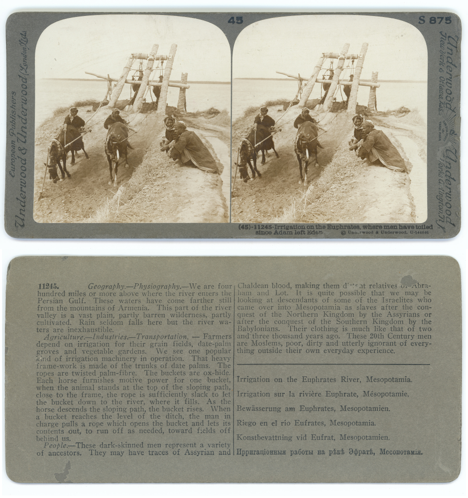
Source
Tim Hunt, U.S. Army, Irrigation canal Fira Shia, Iraq (2), Wikimedia Commons. Licence : Domaine public.Situer la civilisation mésopotamienne dans le temps
L'invention de l'écriture
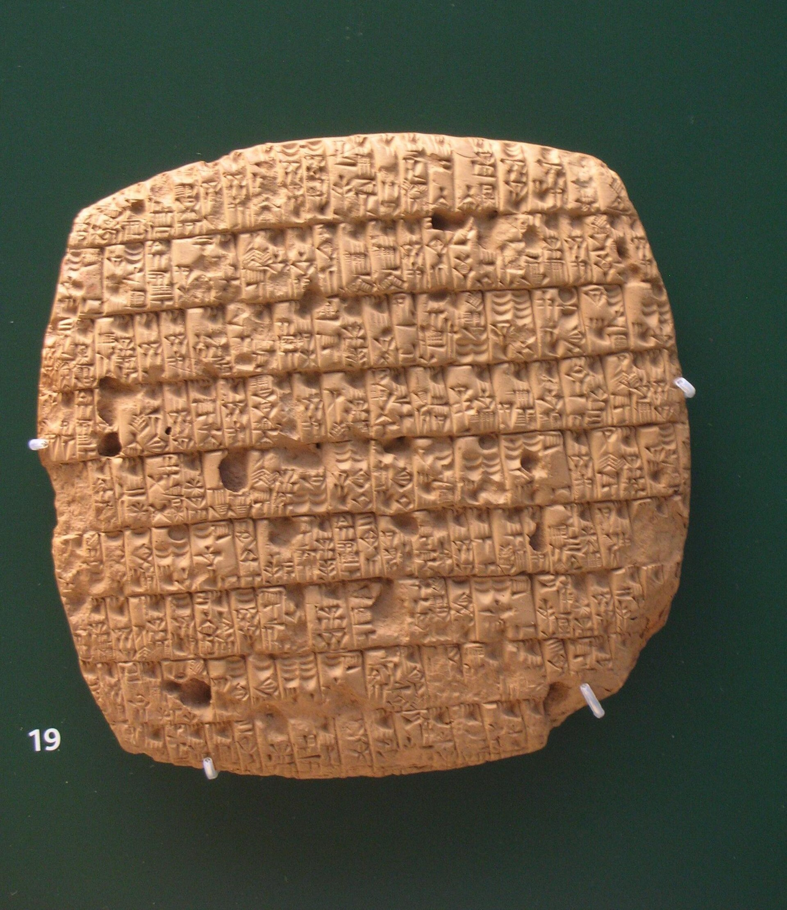
Source
Gavin.collins, Issue of barley rations, Wikimedia Commons. Licence : Domaine public.Vers 3300 av. J.-C., en Mésopotamie, les Sumériens ont voulu conserver les traces des biens qu'ils possédaient et qu'ils échangeaient. Ils ont gravé sur des tablettes d'argile fraîche des dessins représentant des nombres, des mots, des objets, des idées. On appelle ces signes des pictogrammes : la première écriture était née.
L'écriture sumérienne était néanmoins très compliquée. Elle a donc été simplifiée au cours des siècles suivants et les dessins ont été remplacés par des signes en forme de clou ou de coin. Pour reproduire cette forme, les Mésopotamiens utilisaient un roseau à bout triangulaire appelé calame. C'est ainsi que l'écriture cunéiforme est née, et notons qu'elle comporte près de 600 signes.
L'écriture cunéiforme, d'abord utilisée dans un but commercial, est devenue essentielle pour répondre à différents besoins dans les domaines religieux, administratifs, scientifiques, etc. Les supports sur lesquels l'écriture est produite vont considérablement changer avec les années. Le papyrus et le parchemin viendront remplacer la tablette d'argile. Ces nouveaux supports permettent de tracer plus facilement les symboles et d'améliorer la compréhension du message que l'on veut transmettre.
Un métier particulier
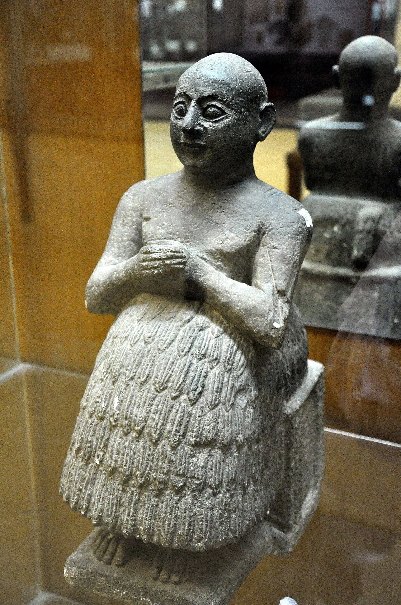
Source
Osama Shukir Muhammed Amin FRCP(Glasg), A replica of the seated statue of the Sumerian scribe Dudu, dedicated to god Ningirsu. The Sulaymaniyah Museum, Wikimedia Commons. Licence : Creative Commons BY-SA 4.0.Le scribe écrit à la main des textes administratifs, religieux et juridiques ou des documents privés. Puisqu'il est l'une des rares personnes à savoir écrire, il possède un statut particulier. Le prestige lié à ce métier lui donne une place enviée dans la hiérarchie sociale.
L'utilité de l'écriture dans la société mésopotamienne
Six documents montrent à quoi l'écriture a servi une fois inventée. Pour chacun, observe d'abord la fiche et formule ta propre réponse, puis vérifie-la en révélant la fonction.
Les fonctions de l'écriture dans la société mésopotamienne
Observe chaque document, devine sa fonction, puis vérifie
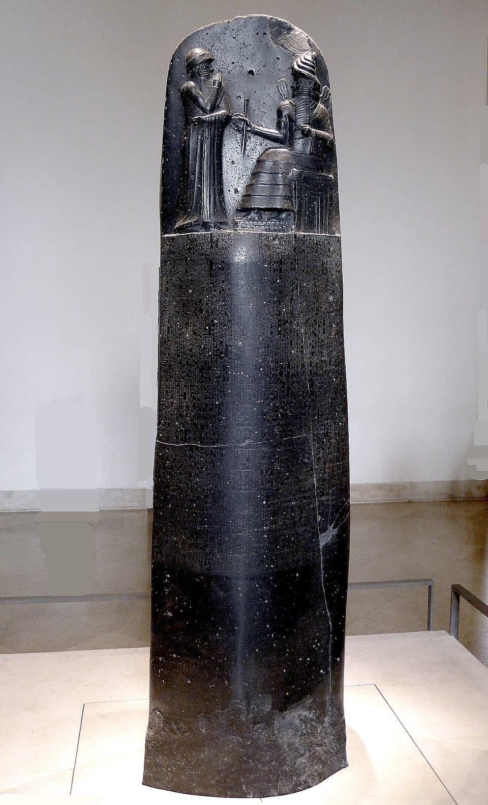
Source
Mbzt, P1050763 Louvre code Hammurabi face rwk, Wikimedia Commons. Licence : Creative Commons BY 3.0.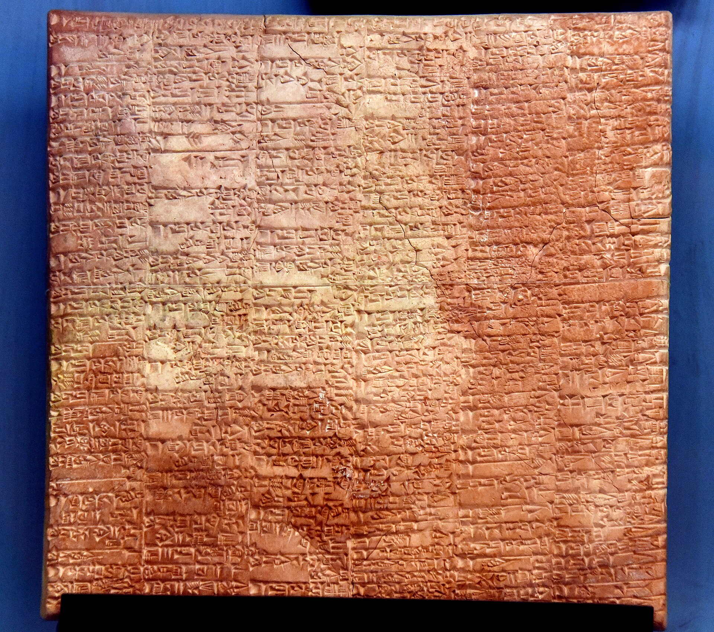
Source
Osama Shukir Muhammed Amin FRCP(Glasg), Large inventory list written during the 48th regnal year of Shulgi, king of Ur. From Lagash, Iraq. Ur III period, c, 2046 BCE. Ancient Orient Museum, Istanbul, Wikimedia Commons. Licence : Creative Commons BY-SA 4.0.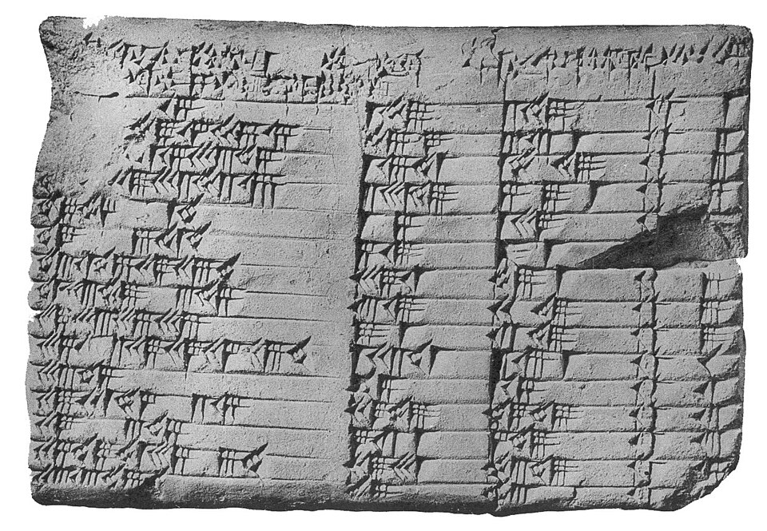
Source
photo author unknown, Plimpton 322, Wikimedia Commons. Licence : Domaine public.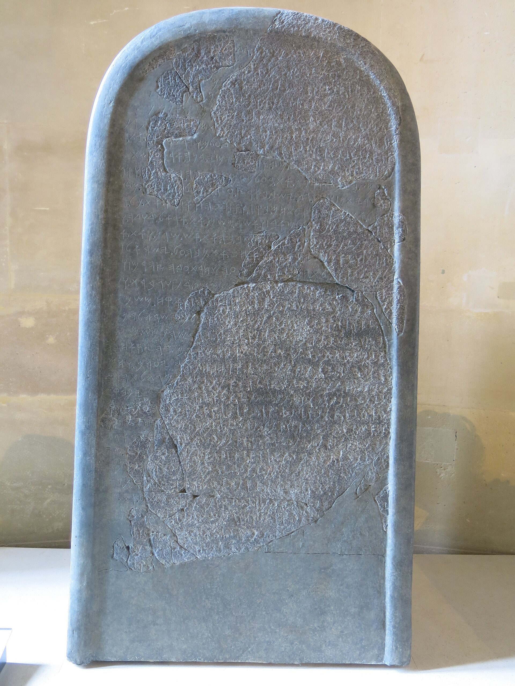
Source
Tangopaso, Mesha stele (Louvre, AO 5066), Wikimedia Commons. Licence : Domaine public.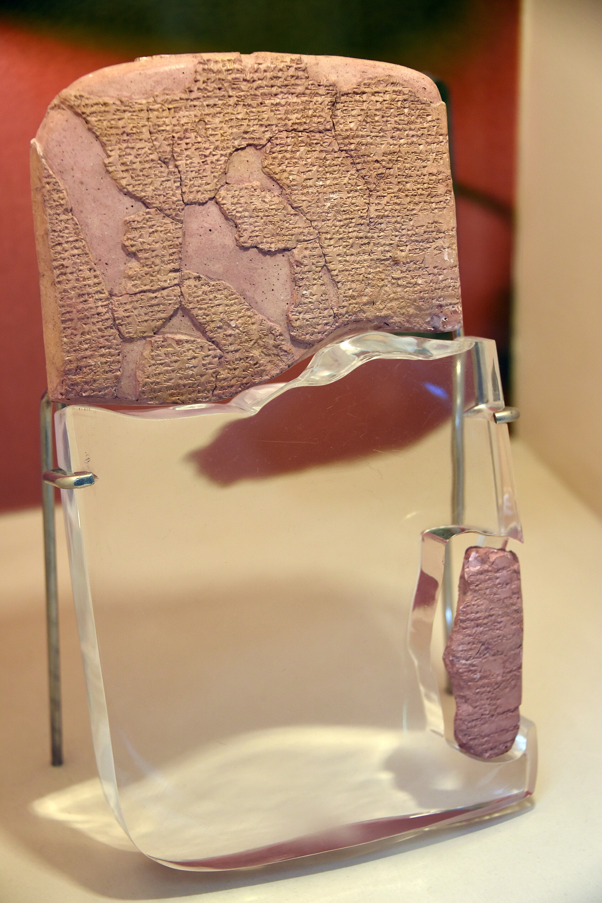
Source
Osama Shukir Muhammed Amin FRCP(Glasg), Kadesh Treaty, written in Akkadian. 1269 BCE. From Boğazköy, Turkey. Clay tablet. Museum of the Ancient Orient, Istanbul, Turkey, Wikimedia Commons. Licence : Creative Commons BY-SA 4.0.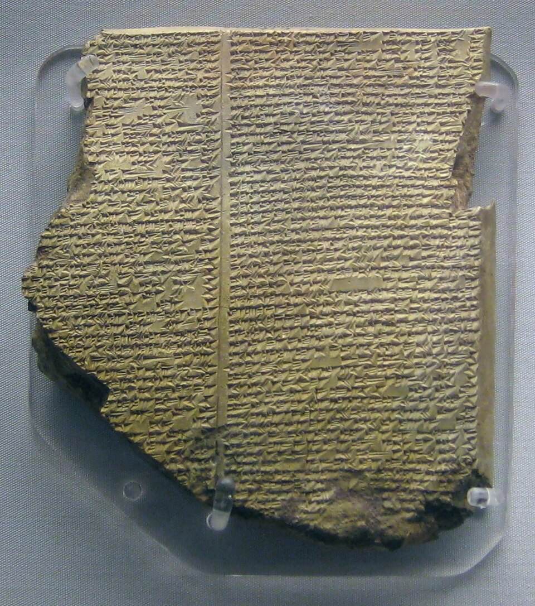
Source
Auteur inconnu, British Museum Flood Tablet, Wikimedia Commons. Licence : Creative Commons Zero.Babylone : Hammourabi et son code de lois
Source
Mbzt, P1050763 Louvre code Hammurabi face rwk, Wikimedia Commons. Licence : Creative Commons BY 3.0.Au début du 2e millénaire avant notre ère, la cité de Babylone, alors un modeste village sur les rives de l'Euphrate, était loin de la cité-État légendaire qu'elle allait devenir. C'est sous l'impulsion de son 6e roi, Hammourabi, qui accéda au trône vers 1792 av. J.-C., que son destin bascula. Héritant d'un royaume de taille réduite, Hammourabi se révéla être un stratège militaire et un diplomate redoutable. Par un jeu complexe d'alliances, de guerres et de trahisons, il parvint à éliminer un à un ses puissants voisins, unifiant une grande partie de la Mésopotamie sous son autorité et faisant de Babylone la capitale d'un vaste empire.
Mais la renommée d'Hammourabi ne repose pas uniquement sur ses conquêtes. Il fut également un grand bâtisseur qui transforma sa capitale. Sous son règne de 43 ans, Babylone connut un développement urbain sans précédent. De nouveaux canaux furent creusés pour l'irrigation et le transport, des fortifications furent érigées et de magnifiques temples, appelés ziggourats, furent construits à la gloire du dieu tutélaire de la ville, Marduk. Grâce à lui, Babylone devint non seulement une puissance politique, mais aussi le coeur religieux et intellectuel de la Mésopotamie, attirant savants, prêtres et artistes.
L'héritage le plus durable d'Hammourabi est sans conteste son célèbre code de lois. Bien qu'il ne s'agisse pas du premier recueil de lois de l'Histoire, il en est le plus complet et le mieux conservé de cette époque. Gravé sur une stèle de basalte de plus de deux mètres de haut, ce texte n'est pas un code juridique au sens moderne, mais plutôt une compilation de décisions de justice, une sorte de jurisprudence visant à unifier le droit dans son royaume.
Le principe fondamental de ce code est la Loi du Talion, résumée par la célèbre formule « oeil pour oeil, dent pour dent ». Cependant, l'application de cette loi n'était pas égale pour tous : elle variait considérablement en fonction de la classe sociale des individus impliqués.
Par exemple, une agression commise par un homme libre sur un autre homme libre était punie par la réciprocité, mais si la victime était un esclave, la sanction se limitait souvent à une simple compensation financière. Le code couvrait tous les aspects de la vie quotidienne : le droit de la famille, le commerce, les dettes, la propriété et les fautes professionnelles.
Le roi installe plusieurs stèles de basalte représentant ce code dans son royaume, afin que toute personne puisse connaître la loi. Cette tactique permet au roi de mieux contrôler l'ensemble de sa population. Le Code d'Hammourabi contient 282 articles.
Quelques articles du Code d'Hammourabi
- « Si un homme a volé le trésor du dieu ou du palais, cet homme est passible de mort, et celui qui aurait reçu de sa main l'objet volé est passible de mort. »
- « Si un enfant a frappé son père, on lui coupera les mains. »
- « S'il a frappé le cerveau d'un esclave d'homme libre, on lui coupera l'oreille. »
- « Si un homme a frappé le cerveau d'un homme de condition supérieure à lui, il sera frappé en public de 60 coups de nerf de boeuf. »
- « S'il a brisé un membre d'un homme libre, on lui brisera un membre. »
- « Si une femme ne prend pas garde à soi et est sorteuse, dilapide sa maison, discrédite son mari, cette femme on la jettera à l'eau. »
Visiter Babylone
La Babylone d'Hammourabi est enfouie sous la ville plus récente, souvent sous la nappe d'eau souterraine : les archéologues n'ont presque pas pu la fouiller. La maquette montre plutôt la ville que le roi Nabuchodonosor II a rebâtie plus de mille ans plus tard, vers -575. Fais-la tourner, choisis un lieu pour lire sa description ou suis la visite guidée.
Babylone vers -575
Fais tourner la ville · Choisis un lieu
Fouillé par les archéologues : plan connu Emplacement connu, forme imaginée Imaginé d'après ce qu'on sait d'ailleurs Les hauteurs sont presque toujours estimées : seuls les plans au sol ont été retrouvés.
Glisse pour tourner · Clic droit ou Maj pour déplacer · Molette pour zoomer
Suis la grande procession du Nouvel An, du nord de la ville jusqu'au temple de Marduk.
C'est la fête du Nouvel An. La statue de Marduk revient en procession vers son temple. Suivons-la depuis le nord.
La procession entre d'abord dans la grande enceinte, près du palais d'été.
Elle avance ensuite entre deux murs décorés de lions.
Elle passe sous la grande porte bleue, l'entrée nord de la ville intérieure.
Sur sa droite, derrière de hauts murs, s'étend le palais du roi.
Plus loin se dresse la grande ziggourat, au milieu de son enceinte sacrée.
La statue de Marduk retrouve enfin son temple.
Pendant ce temps, la vie continue dans les quartiers d'habitation.
Le fleuve et son pont relient les deux moitiés de la ville.
Deux murs et un fossé protègent la ville. Fin de la visite : à toi d'explorer !
Dieux et temples
Le roi et ses palais
Remparts, portes et voies
La ville et ses environs
Tu survoles Babylone vers -575, plus de mille ans après Hammourabi. Le roi Nabuchodonosor II a rebâti sa capitale avec des millions de briques : deux enceintes de remparts, des palais, des temples et la célèbre porte d'Ishtar. L'Euphrate coupe la ville en deux.
Fais tourner la maquette en glissant avec la souris ou avec le doigt. Choisis un lieu sur la maquette ou dans la liste pour lire sa description, ou suis la visite guidée.
À savoir. Beaucoup de briques portent un tampon au nom du roi : « Nabuchodonosor, roi de Babylone, qui prend soin de l'Esagil et de l'Ezida, fils aîné de Nabopolassar, roi de Babylone ». On en trouve encore partout dans les ruines.
Une reconstitution. Le plan des monuments vient surtout des fouilles menées de 1899 à 1917 par l'archéologue allemand Robert Koldewey. Les hauteurs, les maisons et la rive ouest, presque jamais fouillée, sont imaginées d'après ce qu'on sait. Le bouton « Ce qu'on sait vraiment » colore la maquette selon ce que les archéologues ont retrouvé.
Son nom veut dire « maison du fondement du ciel et de la terre ». C'est la ziggourat de Marduk, le dieu protecteur de Babylone. Selon une tablette ancienne, elle compte sept étages et mesure environ 90 m de haut, autant que la largeur de sa base. C'est la hauteur d'un immeuble d'une trentaine d'étages.
Un temple couronne le sommet. On y monte par trois grands escaliers, sur la face sud. Détruite par les Assyriens en -689, la tour a été rebâtie peu à peu. Nabuchodonosor II l'achève en faisant élever le temple du sommet.
À savoir. Beaucoup d'historiens pensent que cette tour a inspiré le récit de la tour de Babel, dans la Bible.
Aujourd'hui. Il ne reste de la tour que la trace de sa base. Elle a été démontée vers -300, après la mort d'Alexandre le Grand, qui voulait la reconstruire.
Sur la maquette. Les archéologues ont mesuré la base, de 91 m de côté. Les étages suivent la tablette ancienne. Certains spécialistes pensent toutefois que la tour était plus basse, autour de 60 m.
L'Esagil, « la maison au sommet élevé », est le plus important temple de Babylone. Son sanctuaire abrite la statue de Marduk, le roi des dieux de Babylone. Son épouse, la déesse Zarpanitu, y a aussi sa statue. Les prêtres s'occupent des statues comme d'un roi et d'une reine : ils leur apportent chaque jour à manger.
Au printemps, la fête du Nouvel An dure douze jours. Le huitième jour, une grande procession porte la statue de Marduk hors de la ville, au nord, jusqu'au temple de la fête. Elle revient à l'Esagil quelques jours plus tard.
À savoir. Selon un texte ancien, le grand prêtre gifle le roi devant la statue de Marduk pendant la fête. Si le roi pleure, c'est le signe que le dieu est content.
Sur la maquette. Le temple est enfoui sous près de 20 m de terre. Koldewey l'a exploré en creusant des puits et des tunnels : on connaît son plan, pas sa hauteur.
Une tablette ancienne, qui décrit la ville, nomme 43 temples. Les archéologues en ont fouillé quelques-uns. La maquette en montre quatre. Celui de la déesse Ninmah se dresse près de la porte d'Ishtar. Celui d'Ishtar d'Akkad se cache au milieu des maisons. Les deux autres appartiennent aux dieux Nabû et Ninurta.
Ils se ressemblent : une entrée encadrée de deux tours, une cour, puis le sanctuaire où se trouve la statue du dieu ou de la déesse.
À savoir. Dans le temple de Nabû, le dieu de l'écriture, les archéologues ont trouvé de nombreuses tablettes d'exercices d'élèves scribes.
Sur la maquette. Ces quatre temples ont été fouillés : leur plan est connu.
C'est le grand palais de Nabopolassar et de son fils Nabuchodonosor II. Il s'appuie sur le rempart, entre la voie processionnelle et l'Euphrate. Ses centaines de salles se groupent autour de cinq grandes cours : logements, bureaux, entrepôts et salles de réception.
La salle du trône, longue de 52 m, s'ouvre sur la cour principale. Sa façade est couverte de briques émaillées : des colonnes, des palmettes et, à la base, des lions qui avancent.
À savoir. En -323, le conquérant Alexandre le Grand meurt dans un palais de Babylone. Les textes anciens ne disent pas lequel.
Aujourd'hui. Dans les années 1980, le dictateur irakien Saddam Hussein a fait rebâtir une partie du palais par-dessus les ruines, avec des briques à son nom, comme Nabuchodonosor. Ces travaux ont abîmé les vestiges.
Sur la maquette. Le plan a été fouillé. Les hauteurs sont estimées.
Des auteurs grecs racontent qu'un roi de Babylone a fait aménager des jardins en terrasses pour sa femme, qui regrettait les montagnes de son pays. Ils en font l'une des sept merveilles du monde.
Pourtant, aucun texte babylonien n'en parle. L'historien grec Hérodote, qui décrit Babylone, n'en dit rien non plus. Koldewey croyait les avoir trouvés ici, dans un bâtiment voûté du palais sud. On pense aujourd'hui qu'il s'agissait plutôt d'entrepôts ou de bureaux. Certains spécialistes placent même les jardins à Ninive, la capitale de l'Assyrie.
Sur la maquette. Comme personne ne sait à quoi ils ressemblaient, ni même s'ils ont existé, ils ne sont pas représentés.
Nabuchodonosor II fait bâtir un nouveau palais juste au nord du palais sud, à cheval sur le rempart. Il s'élève sur une plate-forme de briques d'environ 15 m de haut.
Construit comme une forteresse, il domine la voie processionnelle et protège l'entrée nord de la ville.
Sur la maquette. L'emplacement est connu, mais le palais n'a été fouillé qu'en partie : sa forme est imaginée.
À la pointe nord du rempart extérieur, à environ 2,5 km de la porte d'Ishtar, Nabuchodonosor II fait bâtir un autre palais. Il le pose sur une énorme plate-forme de briques, haute d'environ 18 m. Les archéologues l'appellent le palais d'été.
Ses ruines forment aujourd'hui une colline nommée Tell Babil. C'est elle qui a gardé le nom de la ville.
Sur la maquette. L'emplacement et la plate-forme sont connus. La forme du palais est imaginée.
C'est la plus célèbre des huit portes de la ville intérieure. Elle porte le nom d'Ishtar, déesse de l'amour et de la guerre. C'est une double porte : une petite porte dans le mur extérieur, puis une grande, beaucoup plus haute, dans le mur intérieur.
Ses murs sont couverts de briques émaillées d'un bleu éclatant. Des rangées de taureaux, l'animal du dieu de l'orage Adad, alternent avec des dragons, l'animal de Marduk. On en compte environ 575.
Aujourd'hui. Dégagée en 1902, la porte a été rapportée en Allemagne en milliers de morceaux. La petite porte a été remontée au musée de Pergame, à Berlin : elle mesure près de 15 m de haut. La grande porte n'a jamais été remontée.
Sur la maquette. Le plan a été fouillé. La hauteur de la grande porte est estimée.
Cette large avenue dallée traverse la ville du nord au sud, jusqu'aux temples de Marduk. Son nom babylonien signifie à peu près « que l'ennemi ne passe pas ». C'est le chemin de la grande procession du Nouvel An.
Au nord de la porte d'Ishtar, elle passe entre deux hauts murs décorés de 120 lions de briques émaillées. Le lion est l'animal d'Ishtar.
À savoir. Les dalles de pierre du pavé portent une inscription : Nabuchodonosor II y dit avoir fait paver la rue pour la procession du grand dieu Marduk.
Sur la maquette. Le tracé et la largeur sont connus par les fouilles. La hauteur des murs est estimée.
La ville intérieure est entourée de deux murs de briques, séparés par un passage d'environ 7 m. Le mur intérieur, Imgur-Enlil, est épais de 6,5 m. Le mur extérieur, Nemetti-Enlil, est épais de près de 4 m. Des tours s'y dressent tous les 18 à 20 m environ.
Devant les murs, un fossé large de plus de 50 m, rempli par l'eau de l'Euphrate, tient l'ennemi à distance. On entre dans la ville par huit portes. Chacune porte le nom d'un dieu, comme la porte d'Ishtar ou la porte de Marduk.
Sur la maquette. Sur la rive est, le tracé a été fouillé. Sur la rive ouest, presque pas fouillée, il est probable mais pas certain. Personne ne connaît la hauteur des murs. Selon une étude récente, le mur intérieur mesurait au moins 15 m.
Nabuchodonosor II fait ajouter une deuxième enceinte, beaucoup plus grande, à l'est du fleuve. Longue d'environ 7 km, elle protège les faubourgs, les jardins et le palais d'été.
Elle compte deux murs épais, l'un de briques crues, l'autre de briques cuites. L'espace entre les deux est rempli de gravats. Avec le mur du fossé, l'ensemble mesure environ 30 m d'épaisseur.
À savoir. Selon l'historien grec Hérodote, le sommet du rempart était assez large pour qu'un char tiré par quatre chevaux puisse y circuler.
Sur la maquette. Le tracé est connu sur presque tout son parcours. La partie sud, vers le fleuve, est probable.
Les maisons sont en briques crues et n'ont sans doute qu'un étage. Leurs pièces s'ouvrent sur une cour centrale, qui apporte la lumière et l'air. La pièce principale borde le côté sud de la cour. Les toits plats sont faits de troncs de palmier couverts d'argile.
Les plus petites maisons occupent environ 100 m². Celles des familles riches dépassent 1000 m² et comptent plusieurs cours.
À savoir. Combien de personnes vivent à Babylone ? Les historiens l'estiment entre 80 000 et plus de 200 000 : personne n'a pu les compter.
Sur la maquette. Les archéologues ont fouillé un quartier aisé, le Merkes, à l'est de la voie processionnelle. Les autres maisons sont imaginées sur ce modèle.
Le fleuve traverse Babylone du nord au sud et la coupe en deux. À l'est se trouve la vieille ville; à l'ouest, la ville nouvelle. Il remplit les fossés et les canaux, arrose les champs et sert de route aux bateaux de marchandises.
Des quais de briques cuites, jointes avec du bitume, protègent la ville contre les crues.
Aujourd'hui. Le fleuve a changé de lit plusieurs fois. En se déplaçant vers l'ouest, il a recouvert une partie de la ville ouest, qui a presque disparu.
Sur la maquette. Le cours ancien est reconstitué d'après les quais et le pont retrouvés par les archéologues.
Ce pont relie les deux moitiés de la ville. Long de plus de 120 m, il repose sur sept piles de briques et de pierre, longues de 21 m. Leur forme de bateau les aide à résister au courant. Le tablier, en bois, passe d'une pile à l'autre.
Selon l'historien grec Hérodote, on retirait les planches chaque nuit pour que les voleurs ne puissent pas passer d'une rive à l'autre.
Sur la maquette. Les piles ont été retrouvées en 1910. Le tablier de bois est imaginé.
Autour de Babylone s'étend une plaine découpée en champs et traversée de canaux. Grâce à l'irrigation, les paysans y cultivent l'orge, des légumes et surtout le palmier dattier.
Ces récoltes nourrissent la ville. Les surplus sont gardés dans les entrepôts des temples et du palais.
Sur la maquette. Les champs et les palmeraies sont imaginés : on sait qu'ils entouraient la ville, mais pas leur dessin.
Plans : Robert Koldewey, The Excavations at Babylon (1914); Olof Pedersén, Babylon: The Great City (2021). Emplacement des monuments : Pleiades (licence CC BY) et OpenStreetMap (licence ODbL). Étages de l'Etemenanki : tablette de l'Esagil. Hauteurs des autres bâtiments, maisons, champs et rive ouest : estimations.
Les cités-États : indépendantes les unes des autres
La Mésopotamie regroupe plusieurs villes qu'on appelle cités-États, c'est-à-dire des villes qui possèdent les mêmes pouvoirs qu'un pays actuel. Elle est en mesure de prendre toutes ses décisions de façon indépendante par rapport aux autres territoires. En d'autres mots, une cité-État possède son propre gouvernement, ses propres lois et ses propres institutions. Même si les cités-États mésopotamiennes ont des modes de fonctionnement différents, on y retrouve souvent des institutions et des infrastructures semblables. Par exemple, le roi habite généralement dans un palais qui est entouré de fortifications. On retrouve également d'autres bâtiments comme un marché, des temples et des ziggourats.
Les cités-États de Mésopotamie sont nées le long du Tigre et de l'Euphrate, à peu près au même moment que les premières villes d'Égypte, le long du Nil. Repère sur la carte ces trois fleuves, les mers qui entourent la région et les principales cités de ces deux civilisations.
Cités-États de Mésopotamie et villes d'Égypte
Choisis un lieu
Choisis une cité, une ville, un fleuve ou une mer, sur la carte ou dans la liste.
Aujourd'hui. Le site d'Abou Shahreïn, dans le sud de l'Irak, près d'Ur. Avec Ur et Uruk, il est inscrit au patrimoine mondial de l'UNESCO depuis 2016.
Aujourd'hui. Le site de Tell el-Muqayyar, près de Nassiriya, dans le sud de l'Irak. La ziggourat, restaurée en partie, se dresse toujours au-dessus de la plaine.
Aujourd'hui. Le site de Warka, dans le sud de l'Irak, inscrit au patrimoine mondial de l'UNESCO en 2016 avec Ur et Eridu.
Aujourd'hui. Le site d'al-Hiba, dans le sud de l'Irak. Les statues de Gudea viennent de Girsu, une autre ville de l'État de Lagash.
Aujourd'hui. Le site de Tell Jokha, dans le sud de l'Irak.
Aujourd'hui. Le site de Nuffar, dans le sud de l'Irak. Les fouilles y ont livré des dizaines de milliers de tablettes, dont beaucoup de textes littéraires sumériens.
Aujourd'hui. Le site de Babylone, près de Hilla, en Irak, inscrit au patrimoine mondial de l'UNESCO en 2019.
Aujourd'hui. Le site de Tell Hariri, dans l'est de la Syrie, près de la frontière irakienne.
Aujourd'hui. Le site de Qalaat Shergat, dans le nord de l'Irak, inscrit au patrimoine mondial de l'UNESCO en 2003.
Aujourd'hui. Les ruines se trouvent dans la ville de Mossoul, dans le nord de l'Irak, sur la rive est du Tigre.
Aujourd'hui. Le site de Tell el-Fara'in, dans le nord du delta du Nil.
Aujourd'hui. Le site de Mit Rahina, à une vingtaine de kilomètres au sud du Caire. Il est inscrit au patrimoine mondial de l'UNESCO depuis 1979, avec les pyramides.
Aujourd'hui. Le site d'Abydos, près de la ville d'el-Balyana, en Haute-Égypte.
Aujourd'hui. La ville de Louxor, en Haute-Égypte. Ses temples et ses nécropoles sont inscrits au patrimoine mondial de l'UNESCO depuis 1979.
Aujourd'hui. Le site de Kom el-Ahmar, en Haute-Égypte, entre Louxor et Assouan.
Aujourd'hui. Une île du Nil, en face de la ville d'Assouan, dans le sud de l'Égypte.
Aujourd'hui. Il coule en Turquie, longe brièvement la Syrie, puis traverse l'Irak. Près du golfe, il rejoint l'Euphrate pour former le Chatt el-Arab.
Aujourd'hui. Il traverse la Turquie, la Syrie et l'Irak.
Aujourd'hui. Depuis la construction du haut barrage d'Assouan, terminé en 1970, la crue ne recouvre plus la vallée.
À retenir. Elle touche trois continents : l'Europe, l'Asie et l'Afrique.
Aujourd'hui. Le canal de Suez, ouvert en 1869, la relie à la Méditerranée.
Aujourd'hui. Elle borde la Russie, le Kazakhstan, le Turkménistan, l'Iran et l'Azerbaïdjan.
À savoir. Il y a 5 000 ans, le golfe s'avançait plus loin dans les terres qu'aujourd'hui : Ur et Eridu étaient bien plus près de la mer.
Fond de carte : Natural Earth, domaine public. Emplacement des sites : Pleiades, licence CC BY. Les côtes et le cours des fleuves sont ceux d'aujourd'hui. Il y a 5 000 ans, le golfe Persique s'avançait plus loin dans les terres et l'Euphrate passait tout près d'Ur, d'Uruk et de Nippur.
Voir en vidéo une reconstitution de la cité-État d'Ur
La hiérarchie sociale mésopotamienne
- Le roi est le chef de la cité-État. Il s'occupe de l'armée et gère l'administration de la cité-État : travaux d'irrigation, construction, surplus de nourriture, impôts, etc. Il possède un pouvoir quasi absolu, qu'il détient directement des dieux. Dans cette section, nous pouvons aussi inclure les nobles de la famille royale.
- Les scribes, les prêtres et les soldats sont les fonctionnaires de l'État. Grâce à eux, tout fonctionne. Ils assistent le roi dans sa prise de décisions, exécutent ces ordres et possèdent les terres. Ils ont ainsi une place de choix dans la hiérarchie sociale.
- Les artisans et les marchands ont le contrôle sur le commerce. Les artisans fabriquent les objets nécessaires à la vie quotidienne. Les commerçants, quant à eux, vendent des produits au marché et importent des ressources naturelles nécessaires au bon fonctionnement de la cité-État.
- Les paysans s'occupent de l'alimentation de la population en cultivant les champs et en élevant le bétail. Ils ont des comptes à rendre au roi, qui, rappelons-le, s'occupe de gérer les surplus alimentaires.
- Les esclaves, finalement, sont des prisonniers de guerre ou des personnes n'ayant pas pu rembourser une dette. Ils sont utilisés en tant qu'ouvriers ou en tant que domestiques.
L'Étendard d'Ur
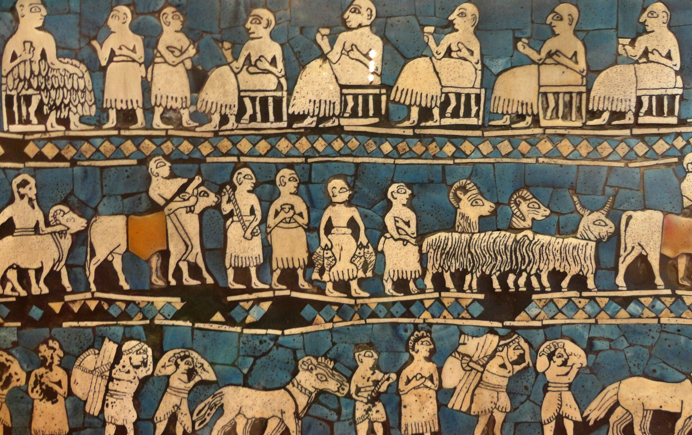
Source
Juan Carlos Fonseca Mata, Standard of Ur - Peace Panel - Sumer, Wikimedia Commons. Licence : Creative Commons BY-SA 4.0.L'Étendard d'Ur est un coffre de bois de 21,7 cm de haut et 50 cm de long, ajusté d'une mosaïque de nacre et de calcaire rouge, sur fond de lapis-lazuli. Il est actuellement dans un état restauré, les effets du temps au cours de plusieurs millénaires ayant dégradé le bois et le bitume servant de colle à la mosaïque.
L'étendard comporte quatre côtés : deux plus importants, de forme rectangulaire, désignés sous le nom de « face de la Guerre » et « face de la Paix ». Chacun de ces quatre côtés comporte trois registres horizontaux, qui se lisent de bas en haut et de gauche à droite, sauf pour les deux registres supérieurs où les personnages convergent vers le roi.
Explorer l'Étendard d'Ur en image interactive
La religion mésopotamienne
La religion mésopotamienne est une religion polythéiste, c'est-à-dire qu'elle compte plusieurs dieux. Les dieux mésopotamiens représentent les forces de la nature, les sentiments et des qualités telles que la ruse et l'intelligence. De la même manière que la société mésopotamienne, la religion est très hiérarchisée. En effet, chaque divinité a son rôle et ses responsabilités. De plus, les dieux ne sont pas tous aussi puissants les uns que les autres.
Les dieux et déesses de la religion mésopotamienne ressemblent beaucoup aux êtres humains. Effectivement, ils ont une apparence et des caractéristiques humaines : qualités, défauts, forces, faiblesses, émotions. La grande différence entre les dieux et les humains est l'immortalité des divinités.
Les ziggourats et les prêtres
Dans les cités-États mésopotamiennes, le culte, c'est-à-dire l'hommage rendu à un dieu, s'exerce dans les ziggourats ou dans les temples. Ces derniers sont considérés comme les résidences des dieux. On y pénètre dans le plus grand respect. Dans ces lieux sacrés, on pratique des cérémonies, des sacrifices et on y dépose des offrandes aux dieux. Ainsi, les prêtres ont un grand rôle à jouer dans la société mésopotamienne. En effet, ils sont considérés comme les intermédiaires entre la population et les dieux.
Le vase d'Uruk, taillé dans l'albâtre vers -3200, montre une procession d'habitants qui apportent des paniers de fruits et de grains à la déesse de la cité. C'est une image directe du lien entre le surplus agricole, le temple et le pouvoir religieux. Enlil est l'un des dieux principaux de la religion mésopotamienne. Il est considéré comme le roi des dieux, divinité suprême du panthéon mésopotamien. C'est lui qui, par ses décisions, attribue la suprématie aux rois humains, qui lui accordent donc une place de choix dans leurs offrandes et leurs inscriptions commémoratives.
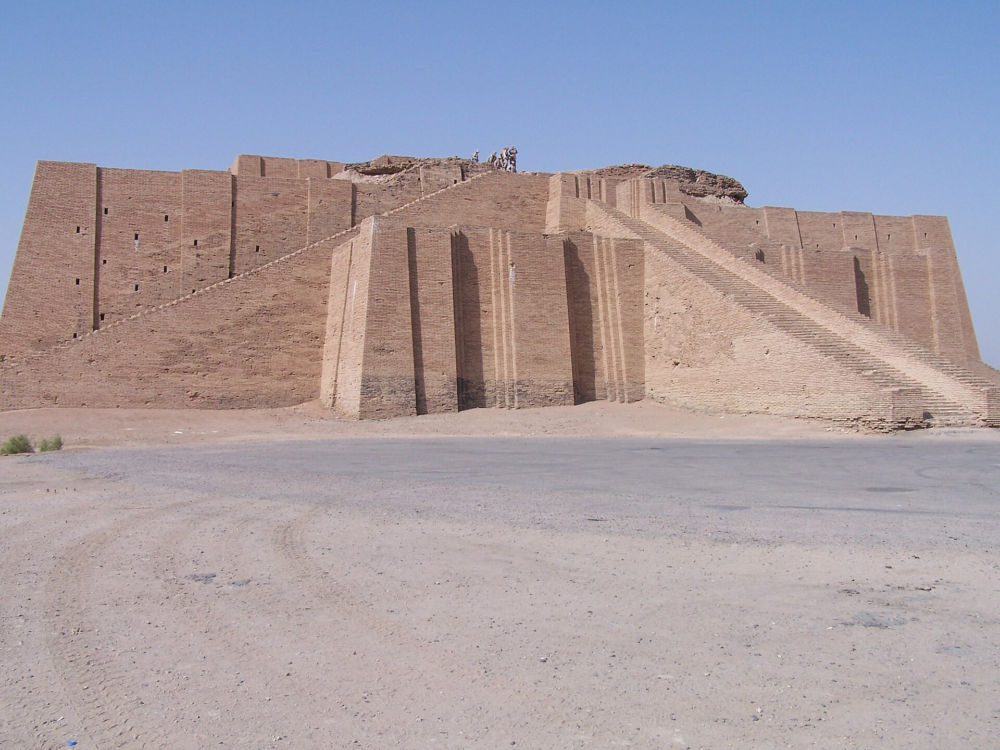
Source
en:User:Hardnfast, Ancient ziggurat at Ali Air Base Iraq 2005, Wikimedia Commons. Licence : Creative Commons BY 3.0.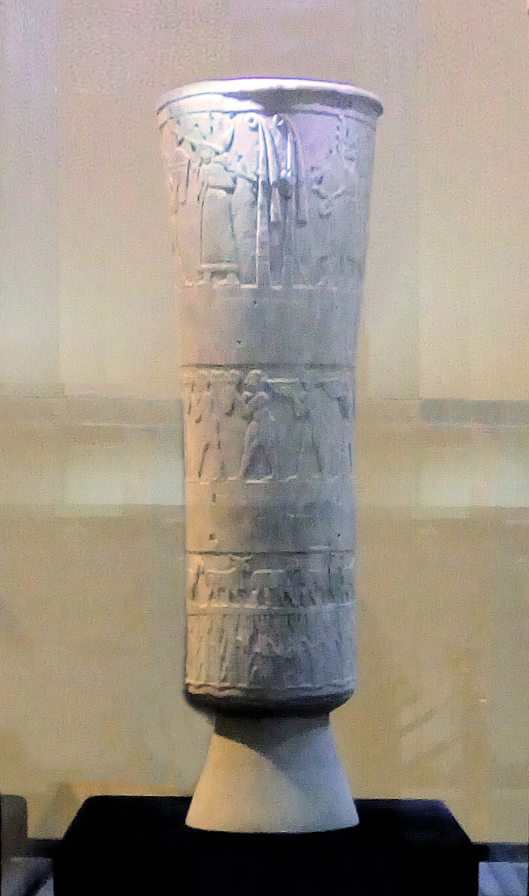
Source
Solider 16IQ, Warka vase Baghdad Museum, Wikimedia Commons. Licence : Creative Commons BY-SA 4.0.Le commerce en Mésopotamie
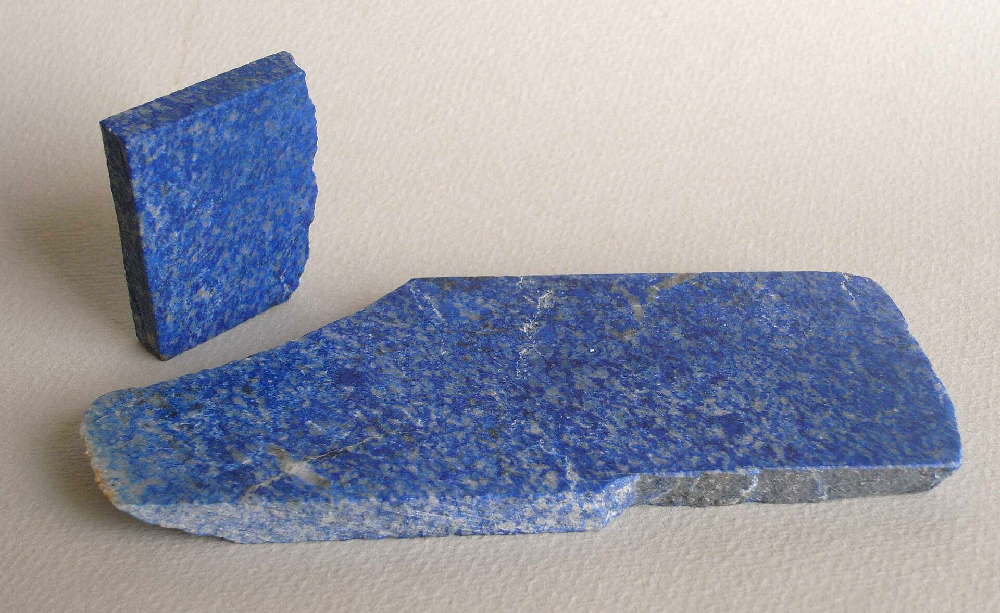
Source
Lysippos, Lapislazuli afghanistan-b, Wikimedia Commons. Licence : Creative Commons BY-SA 3.0.L'économie de la Mésopotamie repose fondamentalement sur l'échange des surplus agricoles contre des minerais provenant des régions avoisinantes, comme l'argent d'Anatolie, le cuivre d'Oman ou le lapis-lazuli de la vallée de l'Indus. Dès 3400 avant notre ère, les Sumériens ont initié le commerce et les marchands d'une cité-État comme Ur importaient des métaux d'Asie centrale. La cité-État d'Assur est ensuite devenue un centre métallurgique et commercial de premier plan.
L'âge du fer a constitué un tournant majeur pour l'économie et la puissance militaire dans la région. Au départ, les Hittites détenaient le savoir-faire de la sidérurgie, mais les Assyriens ont par la suite maîtrisé cette technologie cruciale. Cela leur a donné une supériorité militaire, jetant les bases de leur empire. L'État assyrien a alors mis en place un système économique centralisé, exerçant un monopole sur les métaux. Ce contrôle s'étendait des mines jusqu'aux routes commerciales et aux ateliers de forgerons, où étaient fabriquées les armes.
Ce contrôle de l'État a favorisé l'émergence de nouvelles professions spécialisées, telles que banquiers, commerçants et investisseurs privés. Ceux-ci opéraient depuis des quartiers dédiés, les kârums. Les marchands et les commerçants utilisaient les atouts de la Mésopotamie afin de transporter les marchandises sur de longues distances. En effet, la présence de nombreux fleuves dans cette région de la planète facilite les déplacements. Afin de pouvoir voyager par ceux-ci, les Mésopotamiens construisent des barques faites de roseaux et des galères de bois, pour les longues distances.
Lorsqu'ils sont obligés de transporter les marchandises à pied, les Mésopotamiens font appel aux animaux. En effet, l'âne est souvent utilisé. Ce dernier tire un chariot, innovation technique importante et permise grâce à l'invention de la roue.
Applications d'apprentissage
Quatre applications proposées par Mme Johanne Rodrigue et M. Mathieu Mercier.
Pour aller plus loin
- Babylone, joyau de l'Ancien monde, National Geographic